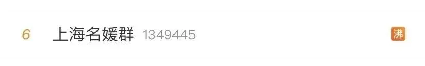
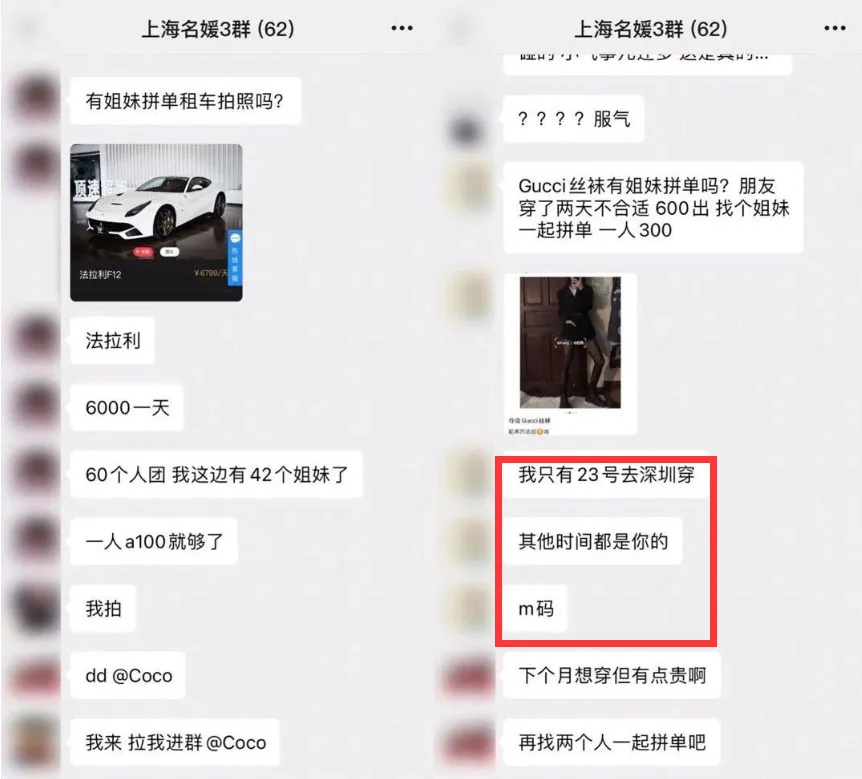

孖仔帮
公众号ID：twinsbang
关注
文|圆圈妈
网图|侵删
前段时间，一篇名为《我潜伏上海“名媛”群，做了半个月的名媛观察者》的文章在我的朋友圈刷屏了，据说还上了微博热搜，
文章主要讲述了作者花了500元，进入了一个名媛群做卧底，揭露了魔都名媛们的日常生活，原以为是精英阶层的极致奢华，实际是高配版拼多多...
豪车可以拼，酒店可以拼，下午茶可以拼，连丝袜都可以拼...
还有网友们模仿他们的语气讲话，对仗工整，生动形象，简直是承包了我一下午的笑点。
其中，名媛群有一个拼丝袜的聊天记录，让我忍不住脑洞大开了下：有人拼带双胞胎吗？我只带一小时，其他时间都是你的，哈哈！
笑着笑着突然觉得这些套路怎么似曾相识，貌似我当年也是这种操作，与一波人拼团一起带双胞胎，才终于把两只四角吞金兽拉扯到上幼儿园。
这期间的血泪史，今天这篇必须来揭露下...
1月龄
拼单人数：4人
拼单人：队友，公婆2人，小姑子1人
吃瓜群众：我
别看有4个人，阵营好强大，但其实唯一起作用的是小姑子，年轻耐熬，有经验；公婆身体不好，无法跑全场，队友修完产假，7天后就屁颠屁颠上班去了；我，半残不废的人，剖腹产元气大伤，能自理已经很不错了。
还好他们哥俩从新生儿科出院时，已经是产后11天，我基本上元神归位了，可以自理也能帮忙打下手，不然真的是叫天天不应叫地地不灵。
这个拼团，全员目标一致：活着出月子。
2月龄--3月龄
拼单人数：3人
拼单人：我，公婆2人
吃瓜群众：队友
我和公婆，三人拼团一起带俩娃，3对2，这个组合，其实够奢侈的了，若资源优化好，分工明确，应该能凑合着，但我们仨都是臭皮匠，对养育小娃娃一知半解。
还偏偏遇上两个早产儿，婆婆的老旧带娃经验严重水土不服，根本招架不住两个先天欠发育的小婴儿，许多喂养困难的问题把我们整团搅得人仰马翻：
60ml奶要喝1个小时才能喝完，
吐奶时，从鼻子里喷射出来，
肠绞痛时，两个一起哭，一阵阵撕心裂肺的喊叫，响彻整个小区...
我，除了身体还在恢复中，更多的是对婴幼儿护理和科学育儿知识一片空白，最简单的冲调奶粉都经常搞错顺序，更别提给他们拍嗝哄睡，湿疹处理，换衣服，洗澡...
好在晚上有队友接力，白天是吃瓜群众的他，晚上发挥主心骨的作用，这个拼团才不至于全军覆没。
4月龄--7月龄
拼单人数：2人
拼单人：公婆2人
吃瓜群众：我，队友
终于上班，我像监禁已久的逃犯一样，嗖地一声破门而出，跳上公交车的那一瞬间，好想就这样一走了之，再也不回来了，连日来的不眠不休，让我产生了抛夫弃子的念头。
最后，还没到点下班，我就认怂急匆匆地往家赶。因为，白天我和队友上班去，公婆两人“2对2”，那场面....细思极恐，我实在不放心。
果然，两老竟然早餐都没空吃，看到公婆饿到有气无力，俩娃也是饿得嗷嗷大哭，我和队友非常过意不去。
晚上我和队友分工合作，轮流站岗，尽量让公婆2人晚上能睡个好觉。
然而，我们所做的一切依然是以卵击石，
这个月龄的圆圈太难带了，辅食不肯吃，厌奶，闹觉，睡眠倒退...全部一起来，让人极度抓狂崩溃，心力交瘁。
公婆数次老泪纵横地表示扛不住了，想把圆圈拎回老家带，有其他亲戚打打下手，但都被我们狠心拒绝了。期间也曾想过钟点工，但穷限制了选择，只能作罢，继续熬着。
这个拼团，颇为狼狈，让我彻底脱胎换骨。
8月龄--9月龄
拼单人数：2人
拼单人：亲妈，舅妈
吃瓜群众：我，队友
公婆因身体原因，无法来深圳带娃，这真是当头一棒，如临大敌。
我清楚地记得，那一年过年，年夜饭吃得食不知味，我托亲妈四处打听，问遍了全村人和所有亲戚，终于找到舅妈来帮忙。
于是新组合的带娃拼团成功，白天亲妈+舅妈两人带，晚上我和队友开启接力赛...
这个拼团带娃实属无奈之举，因舅妈是亲戚，很多事情不好说，做得不好，也不能明着说，让直肠子的我很伤脑筋。
这是找亲戚带娃的硬伤，带娃放心的同时也带来许多无法启齿的苦恼，此处省略十万个为什么，总之一言难尽...
好在这个拼团很短暂，不然...宁愿多花点钱请靠谱专业的保姆也不想请亲戚带娃。
10月龄--18月龄
拼单人数：2人
拼单人：公婆2人
吃瓜群众：我，队友
公婆惦记着亲孙子，又回来深圳带娃，于是公婆的2人组，再次拼团成功，
此时的圆圈兄弟已经相对好带些了，两老都能定时定量吃口热饭，运气好还能喝上一口热汤，也没再吵着要回老家带。
我感激两老的付出，很多育儿观念上的分歧，只要不是太原则性的事情，我都愿意让步妥协，放心地交给他们带，接纳同在一屋檐下导致的所有鸡毛蒜皮。
2岁半--3岁半
拼单人数：2人
拼单人：队友，亲妈
吃瓜群众：我
公婆因身体原因回老家调养，我的亲爸亲妈重出江湖，白天我爸妈管他们哥俩温饱，晚上我和队友负责一切事宜。
但因亲爸身体原因，无法胜任带娃重任，这个带娃团仅持续了2个月就宣布撤团，紧靠亲妈一人带俩娃，根本寸步难行。
队友不得不提前回归家庭，暂别职场，当起了全职奶爸！
于是，队友+亲妈的组合拼团成功。亲妈主要负责一日三餐和家务活，队友一人带俩娃。
此时的他们，正是可怕的两岁，恐怖的三岁，两只上蹿下跳的泼猴，敏感爱哭，好斗易怒易激惹，不受控制，每次出去溜达，一眨眼就不见人影，感觉比小月龄时更加难带，更加让人心肝脾肺肾瑟瑟发抖...
我经常下班回家看到的是：一大两小，三个男人，全都哭丧着脸，朝我大吐苦水。
于是，在他们3岁时，我离开职场（被迫下岗），加入了拼团带娃的队伍。
3岁半--5岁
拼单人数：2人
拼单人：我，队友
吃瓜群众：无
这个拼团正是我和队友心心念念的理想组合：360°无障碍，全面实现带娃自由。
没有长辈约束（挡箭牌），果然很自由！
我和队友育儿观念一致，训娃时，沟通0障碍，0压力，圆圈很多不良行为习惯，经过我们多次引导和纠正，改正了不少。
这是没有长辈帮带娃的最大好处。
非常庆幸当初回归家庭的决定，在俩娃最需要我的时候，我就在身边。
然而，压力也特别大，因为知道没有人会帮助自己，只能靠自己，不敢出差错，特别害怕出幺蛾子，所以整天一根弦绷着，一刻都不敢放松。
现在队友上班后，我一人带俩娃，若是平平安安，顺顺利利就好，要是遇到些突发情况就招架不住了。
前段时间，两人经常同时流鼻血，都要按压止血，两人都需要我，我连打120的间隙都没有，那种感觉好绝望；最近亲爸生病住院要去照顾，首先想到的是，俩娃怎么办，谁来接送上下学，谁来管他们吃喝拉撒睡...
写到这...一时之间，竟然对明明看起来那么有钱，实际上却这么寒酸”的上海“名媛”表示理解了，
若人人都有轻轻松松“先赚它一个亿”的条件，谁还愿意委屈自己拼什么团，AA个啥子，分享个劳什子...
年轻小仙女们，硬凹“名媛阔少”的人设、省吃俭用地装富，穷尽各种方式地拼团，是为了换取各种资源和变现。
而我何尝不是这样，大家都以为的一胎搞定俩很幸福美满，实际也是人前欢笑背人垂泪，一路与家人拼团接力带俩娃，磕磕碰碰，跌跌撞撞地硬撑下来的。
为了自己不累成狗，为了俩娃被更好地照顾，不得不找帮手拼团带娃。
能力有限，借力而为之，都是为各取所需，何尝不可？
只是，寒酸的是“魔都名媛”，辛酸的是我。
经历了曲曲折折的拼团带娃，我好想说，比生一对双胞胎更幸运的是，有人愿意帮你带双胞胎。这个愿意指的是，愿意服从你的安排，愿意配合你的时间，无条件支持你的所有决定。
如果有人帮你带双胞胎，请感恩！
如果你曾经或者现在正经历这种“双胞胎没人带”的困窘或威胁。
那我真心鼓励你，坚定一点。
跟着自己最希望的方向走，并付诸行动，时间会证明一切，并给予你回报的。
-END-
今日互动话题
#吐个槽吧#
有人帮你带双胞胎吗？
评论区聊一聊呗！
微信公众号：孖仔帮
ID : twinsbang
专注双胞胎孕育，养育，教育经验分享
扫码关注我们
点一下你会更好看耶

